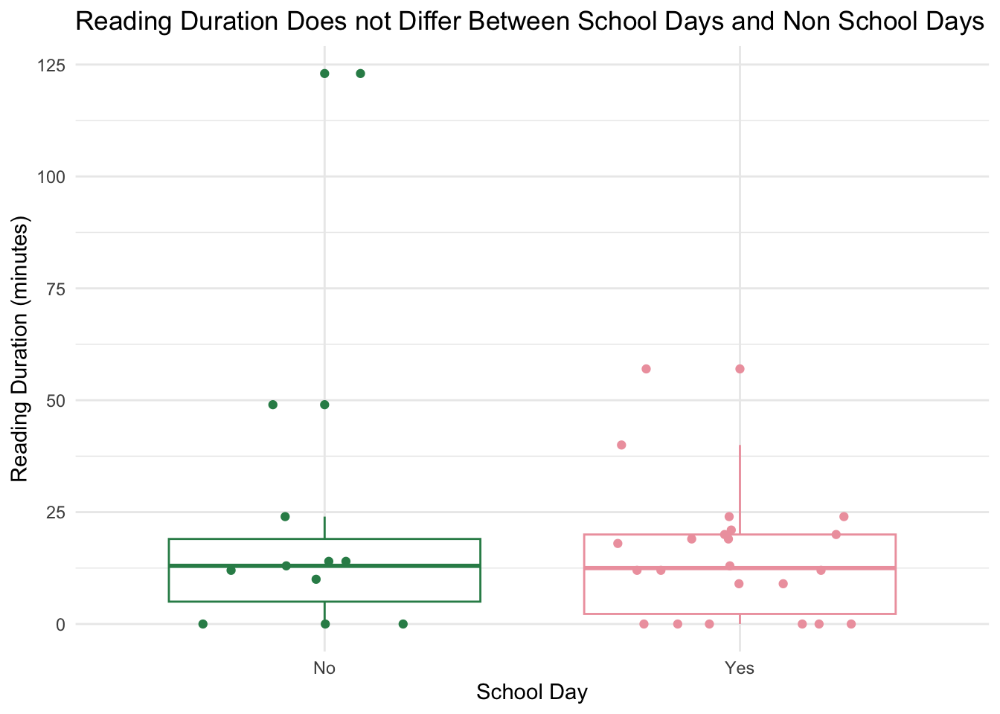

library(tidyverse) # general use
library(janitor) # cleaning data frames
library(here) # file/folder organization
library(readxl) # reading .xlsx files
library(scales) # modifying axis labels
library(ggeffects) # getting model predictions
library(MuMIn) # model selection
library(DHARMa) # model diagnostics
library(effsize) # effect size for problem 4
# reading in data
kelp <- read_csv(here("data", "kelp_data.csv")) # storing kelp data as an object called kelp for problem 2
mopl <- read_csv(here("data", "MOPL_nest-site_selection_Duchardt_et_al._2019.csv")) # storing data for problem 3 as an object called mopl
reading <- read_csv(here("data", "personal_data.csv")) # storing personal data as an object called reading for problem 4ENVS193DS final
Github repository
Set up
Problem 1. Research Writing
a. Transparent statistical methods
In part 1, my coworker used simple linear regression to determine whether or not precipitation predicts flooded wetland area. It is “simple” since there is one predictor.
In part 2, they used a Kruskal-Wallis test to determine whether medians differed accross water year clasification. Since they were comparing more than two predictors they would use ANOVA but since they are comparing medians rather than means, they need the non parametric version which is Kruskal Wallis.
b. Figure needed
I would suggest that my coworkers includes a box plot comparing median flooded wetland area across the five water year classifications. The y-axis would have the flooded wetland area (m2), while the x axis would label the five water classifications. There would be five boxes on the plot. Each of the five would have a line for the median, with upper and lower quartiles at the top and bottom of the box. Individual data points would be layed on top of the box plots to visualize the raw data.
c. Suggestions for rewriting
Flooded wetland area (m2) did not change with precipitation (linear regression, F(df, df) = test statistic, R2 = coefficient of determination, p = 0.11, \(\alpha\) = significance level). Median flooded wetland area (m2) did not differ among water year clasifications (wet, above normal, below normal, dry, critical drought) (Kruskal-Wallis test, \(\chi\)2(df) = test statistic, p = 0.12, \(\alpha\) = significance level).
d. Interpretation
Wetland management type is a nominnal categorical variable that could influence flooded area of a wetland. In the paper, they state that local wetland management practices impact wetland flooding, and that “semi-permanent wetlands” is a management type that would increase flooded area during parts of the year.
Problem 2. Data visualization
a. Cleaning and summarizing
kelp_clean <- kelp |> # creating kelp_clean data set from kelp data
clean_names() |> # cleaning the column names so only lower case letters and underscores are used
filter(site %in% c("IVEE", "NAPL", "CARP")) |># filter to only include these 3 sites
mutate(site_name = case_when( # creating a new column called site_name and relabelling the three sites with full names
site == "NAPL" ~ "Naples",
site == "IVEE" ~ "Isla Vista",
site == "CARP" ~ "Carpinteria"
)) |>
filter(!(date == "2000-09-22" & transect == "6" & quad == "40")) |> # filtering out frond observations from date 2000-09-22 at transect 6 and quadrat 40
mutate(site_name = as_factor(site_name), # making sure that categorical variables are factors
site_name = fct_relevel(site_name, # order of factor levels
"Naples", "Isla Vista", "Carpinteria")) |>
group_by(site_name, year) |> # group data by site and year so that summaries are calculated in these groups
summarize(mean_fronds = mean(fronds)) |> # calculate mean number of fronds in each site/year group
ungroup() # ungrouping for proceeding operations
slice_sample(kelp_clean, n=5) # displaying 5 random rows of the summarized and cleaned data frame # A tibble: 5 × 3
site_name year mean_fronds
<fct> <dbl> <dbl>
1 Naples 2000 1.89
2 Isla Vista 2023 3.78
3 Isla Vista 2012 12.8
4 Carpinteria 2002 9.79
5 Naples 2016 7.26b. Understanding the data
We filtered out frond observations from the date 2000-09-22 in transect 6 in quad 40 because there is a missing value for fronds. In the column for “fronds” for that date, transect and quad, the value is -99999. In the “methods and protols” section of the dataset page, they state “The count values were given a NA (-99999) if: (1) data were not collected for a particular species or (2) a datasheet was lost”
c. Visualize the data
# base layer: ggplot
ggplot(data = kelp_clean, # making figure from kelp_clean data set
aes(x = year, # having date on the x-axis
y = mean_fronds, # mean fronds on the y-axis
color = site_name)) + # different colors for each site
# first layer: points
geom_point() +
# second layer: lines
geom_line() +
labs(x = "Year", # relabelling the x-axis
y = "Mean kelp fronds per year", # relabelling the y-axis
title = "Sites vary in mean kelp fronds per year", # adding a title to the figure
color = "Site") + # capitalizing the word "site" in the key
theme_minimal() + # theme for grid with no border
theme(legend.position = "right", # putting the legend on the right
panel.background = element_blank(), # getting rid of panel background
plot.title = element_text(hjust = 0.5), # centering title
text = element_text(family = "Times")) + # changing font
scale_color_manual( # changing the color of each site line
values = c("Isla Vista" = "tan", # changing color of line for Isla Vista
"Naples" = "aquamarine3", #changing color of line for Naples
"Carpinteria" = "darkgrey")) # changing color of line for Santa Cruz - Diablo
d. Interpretation
According to the figure, Isla Vista is the site that has the most variable mean kelp fronds per year, while Carpinteria seems to have the least variable mean kelp fronds per year.
Problem 3. Data Analysis
a. Response variable
For our models we will use 0s to represent an unused, available site, and 1s to represent sites that were used.
b. Purpose of study
Visual obstruction is a continuous numerical variable. As visual obstruction increases, Mountain Plover nest site use would decrease because snowy plovers will not be able to see their predators. It should be noted that sparse vegetation and some visual obstruction is beneficial to snowy plovers as it provides concealment. I found this in the discussion part, “our selected model indicated that plovers avoided nesting in areas with a maximum vegetation height >11 cm, corresponding with an average visual obstruction of >5 cm”.
Distance to prarie dog colony edge is also a continuous numerical variable. As distance to prarie dog colony edge increase, Plover nest site use would decrease because they both use the same resources and prarie dogs help engineer Plover habitats, but Plover use depends on size of the prarie dog colony. This was also found in the discussion section, “Our findings reinforce the importance of black-tailed prairie dogs as engineers of Mountain Plover habitat”.
c. Table of models
4 models:
| Model number | Visual Obstruction | Distance to Prarie Dog Colony | Predictor list |
|---|---|---|---|
| 0 | no predictors (null model) | ||
| 1 | X | X | all predictors (full model) |
| 2 | X | VO | |
| 3 | X | edgedist |
d. Run the models
mopl_clean <- mopl |> # starting with mopl data
# making sure id is seen as a factor
clean_names() |> # clean column names
mutate(used_bin = case_when(
id == "used" ~ 1,
id == "available" ~ 0
)) |>
# select to only include columns of interest
select(used_bin, edgedist, vo_nest)e. Select the best models
AICc(
model0,
model1,
model2,
model3
) |>
arrange(AICc) df AICc
model2 2 331.8130
model1 3 333.8293
model0 1 384.6318
model3 2 386.1351The best model as determined by Akaike’s Information Criterion (AIC) was visual obstruction because its’ model (model2) had the lowest AIC.
f. Check diagnostics
# Simulate residuals for best model (model2)
residuals2 <- simulateResiduals(model2) # visual obstruction only
#plotting each residuals model separately
plot(residuals2)
According to the DHARMa residuals, the residuals (standing in for errors) look normally distributed based on qqplot on the left. There are no significant problems detected on the residuals vs predicted plot on the right.
g. Visualize model predictions
# generate model predictions from model 2
preds <- ggpredict( # store model predictions in object preds
model2, # use model 2
terms = c("vo_nest [all]")) # prediction made for all visual obstruction values
# base layer: ggplot
ggplot(mopl_clean, # starting will mopl_clean data set
aes(x = vo_nest, # visual obstruction on x-axis
y = used_bin)) + # binary nest site use on y-axis
# first layer: points
geom_point(size = 1, # small points
color = "brown",# color of points
alpha = 0.2) + # make points transparent
# second layer: add 95% CI around the predictions data
geom_ribbon(data = preds, # using prediction data frame for confidence interval
aes(x = x, # x-axis is visual obstruction
y = predicted, # y-axis is predicted site use
ymin = conf.low,
ymax = conf.high), # ribbon geometry represents upper and lower limit of 95% confidence interval
alpha = 0.3, # transparency
fill = "skyblue") + # custom color for ribbon)
# third layer: line for model predictions
geom_line(data = preds, # using prediction data for line
aes(x = x, # x-axis is visual obstruction
y = predicted), # y-axis is predicted Mountain Plover nest site use
color = "blue") + # color for line
scale_y_continuous(limits = c(0,1),
breaks = c(0,1)) +
labs(x = "Visual Obstruction (cm)",
y = "Probability of nest site occupancy (1 = Yes, 0 = No)",
title = "Mountain Plover nest site use and predictions") +
# remove gridlines and apply clean theme
theme_light() +
theme(panel.grid = element_blank()) # remove any remaining gridlines
h. Write a caption for your figure
Figure 1: Mountain Plovers have a higher probability of using nest site with lower visual obstruction. The blue line represent the prediction using the saturated generalized linear model and the ribbon represents the 95% confidence interval of the prediction. The red points represent binary nest site occupancy data collected on Mountain Plovers (n = 86) used to build the model predictions. Citation: Duchardt, Courtney; Beck, Jeffrey; Augustine, David (2020). Data from: Mountain Plover habitat selection and nest survival in relation to weather variability and spatial attributes of Black-tailed Prairie Dog disturbance [Dataset]. Dryad. https://doi.org/10.5061/dryad.ttdz08kt7
i. Calculate model predictions
ggpredict(model2, #use ggpredict which automatically uses 95% confidence interval using model2 which is the visual obstruction only model that had the lowest AIC
terms = c("vo_nest [0]")) #calculate prediction when visual obstruction = 0# Predicted probabilities of used_bin
vo_nest | Predicted | 95% CI
--------------------------------
0 | 0.73 | 0.65, 0.80j. Interpret your results
The probability of nest site occupancy at 0 visual obstruction is 73%. This means when there is no visual obstruction, the probability of nest site occupancy is 73%. As seen in the figure in part g, as visual obstruction increases, probability of nest site occupancy decreases. It can also be observed that at a certain point of visual obstruction around 10 cm, the probability of nest site occupancy plateaus around 0%. Using Akaike’s Information Criterion (AIC), we determined the best model was was visual obstruction only because its’ model (model2) had the lowest AIC. Since distance to prarie dog colony was not part of the best model, including it does not improve model fit, and we cannot say anything about the relationship between distance to prarie dog colony and probability of nest site occupancy. Visual obstruction makes it difficult for Mountain Plovers to see predators and will not survive in these sites, which is why it decreases probability of nest site occupancy. The article discusses that there is some influence of prarie dog colonies on nest site occupancy as prarie dogs engineer their ecosystem and decrease vosual obstruction, though distance to prarie dog colony was not included in the best model.
Problem 4. Affective and exploratory visualizations
a. Comparing visualizations
How are the visualizations different All of my visualizations show different combinations of variables and how they effect reading duration. My affective visualization doesn’t show exact duration, and rather shows reading duration relative to the mean. My visualizations from homework two are more exact, and show precise numbers. My second exploratory visualization from homework two investigates the relationship between average daily temperature and reading duration. This was a variable I chose to not include in my affective visualization as it was shown on the scatterplot that there was no relationship between temperature and reading duration.
What similarities do you see between all your visualizations? All of my visualizations show reading duration. Aditionally, the first exploratory visualization in homework 2 compares reading duration on school days vs non school days. This is also shown in my affective visualization as the shelf on the left is school days, and on the right is non school days. The box plot in homework 2 shows the median and central tendancy, and the line above my bookshelf in my affective visualization shows the mean reading duration. This visualization from homework 2 shows similar data to my affective visualization, just presented in a different way.
What patterns (e.g. differences in means/counts/proportions/medians, trends through time, relationships between variables) do you see in each visualization? Are these different between visualizations? If so, why? If not, why not? All of my visualizations showed few patterns in reading duration. I did see more outliers in reading duration on non school days, because I had more time to have long reading sessions during the day when I did not have school. This was most apparent in my affective visualization as the tallest books really stood out, and there was more of them on the right shelf of non-school days.
What kinds of feedback did you get during week 9 in workshop or from the instructors? One of the peices of feedback I recieved from An was that the height of books should be relative to something rather than just being arbitrary heights. I used this suggested and decided to have a think line for the mean that heights could be relative to. She also suggested that I include another variable, like number of assignments, in my affective visualization on top or reading duration, school day, and book. As she suggested, I decided to have the width of the books correspond to the number of assignments I was working on that day.
b. Designing an analysis
Since my research question is “do I read more on school days or non school days” I wanted to compare central tendancy of reading duration on school vs non school days. Reading duration is a continous discrete variable, whiel reading day (yes/no) is a categorical binomial variable. I was considering using a two-sample t-test, but the qqplot and histogram shows my data is not normally distributed and my sample size is small (n = 34), so I decided to use the Mann-Whitney U test (aka Wilcoxon rank-sum test) to see if there is a difference in median reading duration on school vs non school days. This is the non-parametric version meaning it doesn’t rely on the normal distribution and compares ranks rather than actual values.
c. Test assumptions and run the test
Check assumptions
The assumptions for this test are a random sample which is assumed by study design, and that distributions are similar in shape.
# base layer: ggplot
ggplot(data = reading_clean, # starting data frame
aes(x = duration_minutes, # stem length is the x-axis
fill = school_day)) + # filing columns by watershed
geom_histogram(bins = 9, # creating a histogram with 4 bins
color = "black") + # outlining bins in black
facet_wrap(~ school_day) + # creating seperate panels for watershed
theme_light() + # using a different theme from the default
theme(legend.position = "none") # taking out the legend
Looking at the histograms it seems that the distributions are similar in shape.
Assumptions of random sample and similar shapes are met. Aditionally, reading duration is continous and observations are independent by study design.
Run test
Null hypothesis:
# cleaning data
reading_clean <- reading |> # new object from original data frame
clean_names() # clean column names
# now run test
wilcox.test(duration_minutes ~ school_day,
data = reading_clean)
Wilcoxon rank sum test with continuity correction
data: duration_minutes by school_day
W = 124, p-value = 0.923
alternative hypothesis: true location shift is not equal to 0Calculate effect size
cliff.delta(duration_minutes ~ school_day,
data = reading_clean)
Cliff's Delta
delta estimate: 0.02479339 (negligible)
95 percent confidence interval:
lower upper
-0.3941544 0.4352099 reading_clean |>
group_by(school_day) |> # group by school day vs non school day
summarize(
median = median(duration_minutes, na.rm = TRUE), # calculate median reading duration exluding NA values
n = n() # count number of reading sessions per group
)# A tibble: 2 × 3
school_day median n
<chr> <dbl> <int>
1 No 13 11
2 Yes 12.5 23d. Create visualization
# base layer: ggplot
ggplot(data = reading_clean, # starting with my data clean
aes(x = school_day, # school day on x axis
y = duration_minutes, # reading duration in minutes on y axis
color = school_day
)) +
geom_boxplot() + # second layer: boxplot
geom_jitter(height = 0, # adding horizontal jitter
width = 0.3) +
scale_color_manual(
values = c("No" = "seagreen4", # coloring box and points for non school days in sea green
"Yes" = "lightpink2") # coloring box and points for yes school days in light pink
) +
labs(
x = "School Day", # relabelling x-axis
y = "Reading Duration (minutes)", # relabelling y-axis
title = "Reading Duration Does not Differ Between School Days and Non School Days")+
theme_minimal() + # changing the gg plot theme
theme(legend.position = "none") # removing the legend 
e.
Figure 1: There is no obvious difference in central tendancies of reading duration on school days vs non school days. Median line is shown for the reading duration on non school days (green) and school days (pink). Upper and lower quartiles are shown above and below the median respectivley. Points represent individual observations of reading duration on non school days (green) and school days (pink). Source: personal data collected by me, Sophie Pardehpoosh
f. Write results
We found a negligible difference (Cliff’s /\(delta\) = 0.0238) in reading duration on school days (n = 23, median = 12.5) and non-school days (n = 11, median = 13). (Wilcoxon rank-sum test, W = 124, p = 0.923, α = 0.05). Median reading duration did not differ between school days (12.5) and non-school days (13).
g. Sharing affective visualization
I attended class and showed my affective visualization in week 10 section.